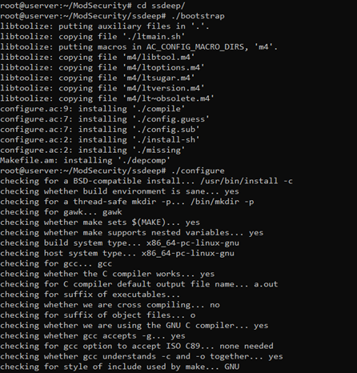
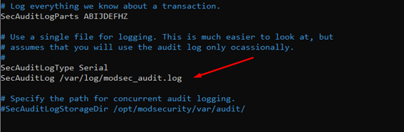
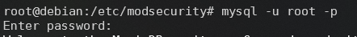

ModSecurity es un WAF de código libre utilizado como un módulo de Apache, con el cual dotamos de protección a nuestro sitio web y nos permitirá gestionar la misma.
Vamos a ver cómo utilizarlo.
ModSecurity es un WAF de código libre utilizado como un módulo de Apache, con el cual dotamos de protección a nuestro sitio web y nos permitirá gestionar la misma.
Vamos a ver cómo utilizarlo.
Para esta practica haremos uso de un Ubuntu Server con un apache en el que instalaremos este módulo.
Antes que nada, si no disponemos de apache o queremos empezar ahora a usarlo podemos instalarlo. Para ello ejecutamos:
~# apt-get update
~# apt-get install apache2 apache2-dev

También tendremos que instalar las dependencias necesarias para esta práctica, para ello:
~# apt-get install bison build-essential ca-certificates curl dh-autoreconf doxygen flex gawk git iputils-ping libcurl4-gnutls-dev libexpat1-dev libgeoip-dev liblmdb-dev libpcre3-dev libpcre++-dev libssl-dev libtool libxml2 libxml2-dev libyajl-dev locales lua5.3-dev pkg-config wget zlib1g-dev zlibc
Una vez tengamos todo lo necesario instalado, vamos a descargarnos de GitHub el algoritmo de fuzzing ssdeep. Para ello:
~# git clone https://github.com/ssdeep-project/ssdeep
Ahora que ya tenemos descargado ssdeep, vamos a compilarlo para ello vamos a ejecutar estos 4 comandos en su carpeta:
~# ./bootstrap
~# ./configure

~# make
~# make install
Hacemos lo mismo con ModSecurity, por lo que vamos en este caso a descargar ModSecurity desde su GitHub. Para ello:
~# git clone https://github.com/SpiderLabs/ModSecurity
Antes de compilarlo, vamos a comprobar que está en su última versión con estos 3 comandos:
~# git checkout -b v3/master origin/v3/master
~# git submodule init
~# git submodule update
Una vez comprobado y actualizado ModSecurity, vamos a compilarlo con los siguientes 4 comandos:
~# ./build.sh
~# ./configure
~# make
~# make install
Este proceso llevará un rato. Cuando terminemos de ejecutar los 4 comandos, nos aparecerá esto al final:
Por último vamos a instalar el conector de ModSecurity con Apache. Para ello vamos a descargarlo también desde su gitlab:
~# git clone https://github.com/SpiderLabs/ModSecurity-apache
Y también lo compilamos e instalamos con los siguientes comandos:
~# ./autogen.sh
~# ./configure --with-libmodsecurity=/usr/local/modsecurity
~# make
~# make install
Ahora que ya tenemos todos los programas necesarios instalados, vamos a configurar nuestro WAF.
Antes de ponernos a configurarlo, vamos a descargar las reglas de ModSecurity que incluye muchas reglas muy útiles. Para ello ejecutamos:
~# wget https://github.com/SpiderLabs/owasp-modsecurity-crs/archive/v3.2.0.tar.gz
Ahora lo descomprimimos, renombramos los siguientes ficheros y lo movemos a nuestro /usr/local
~# tar -zxvf v3.2.0.tar.gz
~# mv owasp-modsecurity-crs-3.2.0 owasp-modsecurity-crs
~# mv owasp-modsecurity-crs/crs-setup.conf.example owasp-modsecurity-crs/crs-setup.conf
~# mv owasp-modsecurity-crs/rules/REQUEST-900-EXCLUSION-RULES-BEFORE-CRS.conf.example owasp-modsecurity-crs/rules/REQUEST-900-EXCLUSION-RULES-BEFORE-CRS.conf
~# mv owasp-modsecurity-crs /usr/local/
Procedemos ahora a crear el módulo de ModSecurity. Para ello en el directorio mods-enabled creamos security3.conf.
nano /etc/apache2/mods-enabled/security3.conf
donde escribiremos lo siguiente:
“LoadModule security3_module /usr/lib/apache2/modules/mod_security3.so
modsecurity on
modsecurity_rules_file '/etc/apache2/modsec/main.conf'”
Vamos ahora a crear el directorio de modsecurity en apache y copiamos varios archivos de configuración en él.
~# mkdir -p /etc/apache2/modsec
~# cp ~/ModSecurity/ModSecurity/unicode.mapping /etc/apache2/modsec/
~# cp ~/ModSecurity/ModSecurity/modsecurity.conf-recommended /etc/apache2/modsec/modsecurity.conf
Ahora cambiamos unas líneas de configuración del modsecurity.conf. Para ello abrimos el archivo con nano y buscamos la linea: ”SecRuleEngine DetectionOnly”
Y tenemos que cambiarla por: “SecRuleEngine DetectionOnly”
Y buscamos en el mismo archivo también la linea: “SecAuditLog /var/log/modsec_audit.log”

Y la cambiamos por: “SecAuditLog /var/log/apache2/modsec_audit.log”
Configuraremos ahora un archivo que utilizaremos para que ModSecurity pueda acceder a las reglas previamente descargadas. Este archivo se va a llamar main.conf y lo crearemos en la ruta de apache2 con:
~# nano /etc/apache2/modsec/main.conf
En el que incluiremos estas 3 lineas:
“Include "/etc/apache2/modsec/modsecurity.conf"
Include "/usr/local/owasp-modsecurity-crs/crs-setup.conf"
Include "/usr/local/owasp-modsecurity-crs/rules/*.conf"”
Para finalizar la configuración vamos a ejecutar el comando:
~# sudo ldconfig
Este comando reseteará las librerías añadidas y por último reiniciamos el servicio de apache2 para guardar todos los cambios realizados y arrancar apache.
~# service apache2 restart
Para comprobar que se ha importado el módulo de ModSecurity usamos el comando:
~# apachectl -M | grep -E -i "loaded|security3_module"
Ahora podemos acceder a nuestro sitio web y comprobar que genera logs en el WAF. Para ver los logs que genera ModSecurity, usamos:
~# tail -f /var/log/apache2/modsec_audit.log
Vamos a realizar ahora pruebas de que ModSecurity bloquea ataques maliciosos. Para ello vamos a instalar DVWA en nuestro apache, que es una herramienta para realizar ataques.
Lo primero será instalar los paquetes faltantes:
~# apt-get -y install mariadb-server php php-mysqli php-gd libapache2-mod-php
Lo primero será configurar la base de datos:
~# mysql -u root -p

Creamos la base de datos que va a utilizar:
create database dvwa;
Generamos el usuario de la base de datos con todos los permisos y una contraseña:
grant all on dvwa.* to sshteam@localhost identified by "P@ssw0rd";
Recargamos los privilegios:
flush privileges;
quit
Ahora eliminaremos el index.html por defecto de apache:
~# rm -rf /var/www/html/index.html
Y descargamos DVWA en /var/www/html
~# git clone https://github.com/ethicalhack3r/DVWA /var/www/html/
Ahora procedemos a renombrar el archivo de configuración de ejemplo:
~# cp /var/www/html/config/config.inc.php.dist /var/www/html/config/config.inc.php

Editamos el archivo config.inc.php:
~# nano /var/www/html/config/config.inc.php
En el archivo de configuración editamos las opciones correspondientes a la base de datos:
Reiniciamos mariadb.
~# systemctl restart mariadb
Procedemos a instalar PHP:
~# apt install php-gd
Comprobamos la versión:
~# php -v
Editamos el archivo de php.ini
~# nano /etc/php/7.3/apache2/php.ini
Y modificamos la siguiente línea dejándola así:
Guardamos y damos permisos a www-data sobre la carpeta html:
~# chown -R www-data:www-data /var/www/html
Y reiniciamos apache2:
~# systemctl restart apache2
Ahora accederemos por navegador a la IP para finalizar la configuración de DVWA:
Accedemos con nuestras credenciales definidas durante la configuración de mariadb y en la siguiente ventana pulsamos el botón de Create / Reset Database.
Una vez hecho, accedemos de nuevo, ahora, con las credenciales admin:password y ya tendremos configurado DVWA.
En este momento, dispondremos de nuestro WAF junto a DVWA.
Una vez tengamos un DVWA podemos acceder por ejemplo a la parte de SQL Injection y probar con un ataque. Vemos que modsecurity nos lo bloquea:
Obra publicada con Licencia Creative Commons Reconocimiento Compartir igual 4.0